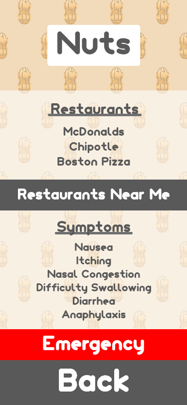

This was one of my final projects in CyberARTS. The requirements for the project were to create something using digital arts, that relates to the career you want to pursue in the future. This project allowed me to explore UX Design.
I wanted to create a project that I would genuinely use so that I would be motivated to do well on it. So, I made an informative app about allergies. This app would inform people of the different symptoms, emergiencies, and foods to avoid
with multiple different allergies. The app would also suggest different restaurants near the user's location that are allergy-free.
During the planning stage, I first made a word bubble of what I wanted in the app. I narrowed it down to: symptoms of common allergies, an emergency page, and places to eat that is safe. I then ordered this list by priority and knew that the emergency
page should be shown in each page. This way, people don't need to go through multiple pages (and by doing so, wasting time) to find the imformation needed in an emergency. The emregency page is kept simple for the sake of readability.

Once I did my research on the common allergies I made a landing page which displays both environmental allergies and food allergies. If you choose either one it gives a list of different kinds of allergens. Choosing an allergen goes into depth of the
different symptoms, fast food restaurants that are safe, and local restaurants that are near the user's location.

The graphics were intended to be simplified depictions of real-life allergens. This would benefit users so that they can quickly identify the allergen, and get the information they need. I designed and drew all of the graphics on Adobe Illustrator, and
exported it onto Adobe XD.

This project went smoothly since I first broke up my design process into parts. The parts being the research phase, planning phase, and the execution phase.